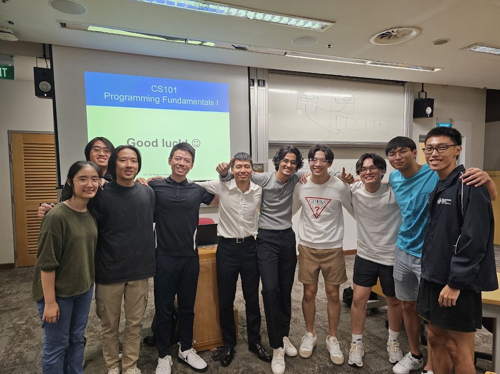

About Me
Hey there, folks! I'm Cledwyn Chan, currently in my sophomore year studying Computer Science at SMU. I love to travel and I love to gym and play football. I also love cheering on my favorite sports teams like Real Madrid in football, Red Bull in F1, and the Warriors in the NBA. As a CS student, gaming is naturally part of my life. From FPS games like CS2, Valorant and Siege to diving into the thrill of sim racing. Gaming is definitely my go-to for relaxation and excitement. I have always believe that "Money can return but memories can't" and hence I have always wanted to create good memories be it with the people around me or my loved ones

My Story
Well, from a young age, my fascination with computers and gaming has been unwavering.
Yet, the joy of multiplayer gaming often turned sour due to the presence of cheaters
and hackers who exploited vulnerabilities within the game. Rather than succumb to the
temptation to cheat, I became intrigued by the mechanisms underlying these exploits and
the ease with which anti-cheat systems could be circumvented. This curiosity sparked a
deep interest in understanding the intricacies of cybersecurity and exploring potential
solutions to safeguard digital environments.My desire to pursue cybersecurity stems from a proactive stance against malicious activities,
driven by a passion to protect digital ecosystems from exploitation and ensure a safe and equitable
online environment for all users.